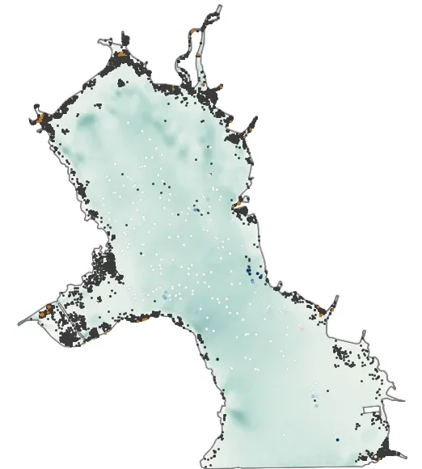
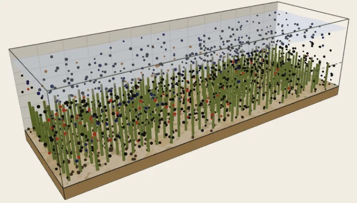

Research project on microplastic transport
Microplastics, from the channel to the sea.
One project at two scales: microplastics followed particle by particle on a GPU, in a laboratory channel with vegetation and in a whole coastal sea.
Microplastics drifting through a meandering river, drawn live.
Two scales of one problem
The fate of a microplastic is decided by processes that act on very different scales, from the drag on a particle among plant stems to the tides and currents of a bay. The project therefore has two models, each with its own page.

Large scale about 100 kmThe Ariake Sea
A GPU-accelerated three-dimensional Lagrangian model for microplastic transport on the unstructured prism meshes of coastal hydrodynamic models.
- Flow of the whole bay from TELEMAC-3D
- Biofilm growth that changes the density of each particle
- Fragmentation that conserves the mass
- Particle transport calculated in parallel on a GPU

Small scale about 10 mVegetated channels
A GPU-accelerated Eulerian-Lagrangian model that resolves the force balance on each microplastic in vegetated and non-vegetated channels.
- Flow through and above the vegetation from OpenFOAM
- Drag, buoyancy, added mass, lift and turbulent dispersion
- Deposition on the bed and trapping at the free surface
- Tested against laboratory experiments
From the particle to the bay
The two models together cover nine orders of magnitude in length, with the same microplastic followed in both.
- 0.1 to 5 mma microplastic
- 1 cma plant stem
- 10 ma laboratory flume
- 1 kma river mouth
- 100 kmthe Ariake Sea
Related tools
- Bayesian instrument
Ariake survey instrument
A few samples give the whole suspended field of the bay, with its uncertainty.
Open the instrument - Teaching demonstration
Microplastic journey
A schematic river-to-lake demonstration of how microplastics travel and settle.
Open the demonstration - Source code
Microplastic modeling
The repository of the Eulerian-Lagrangian model, with the code to be released after publication.
Open on GitHub
Interested in the project?
For questions about the models or collaboration on microplastic transport, get in touch.